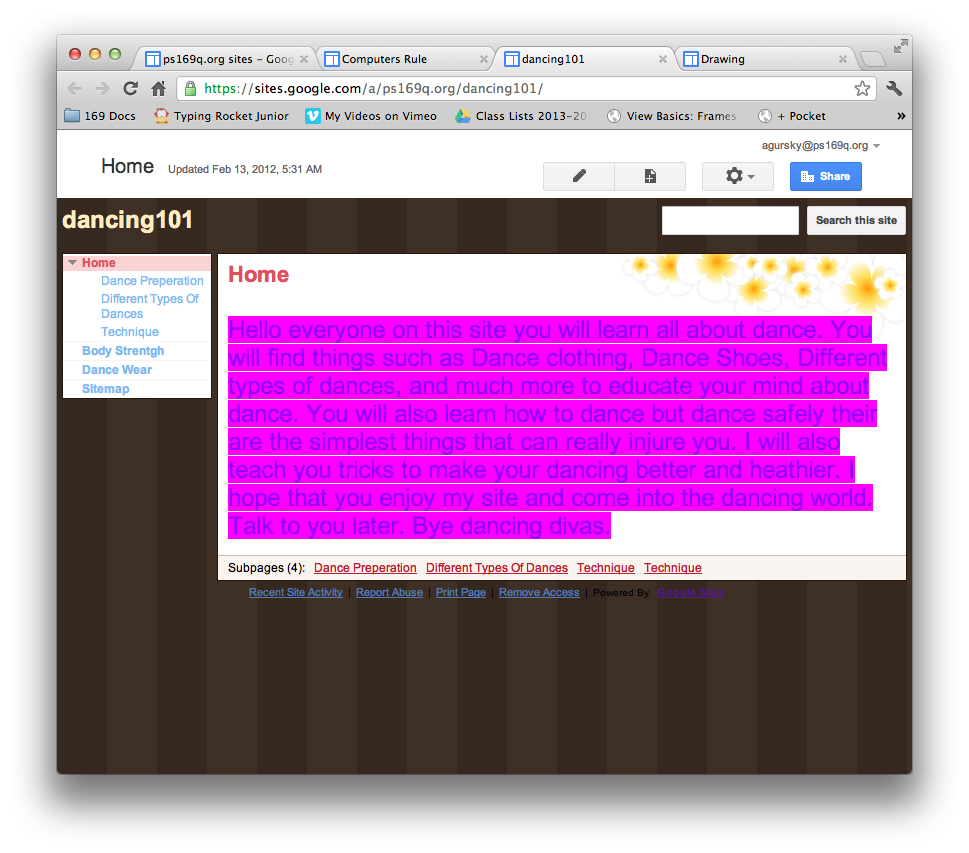
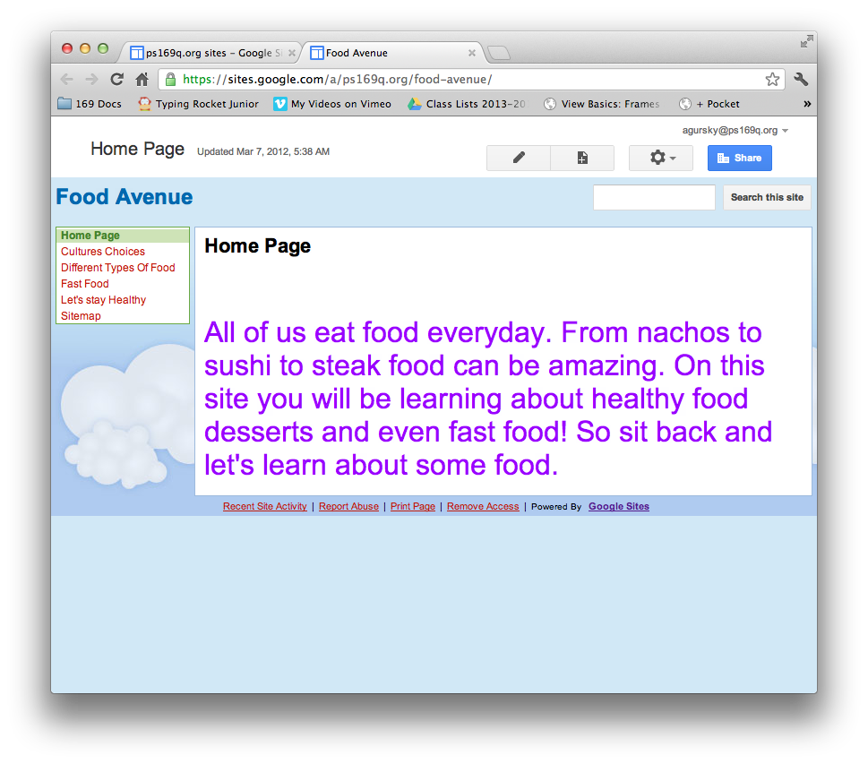
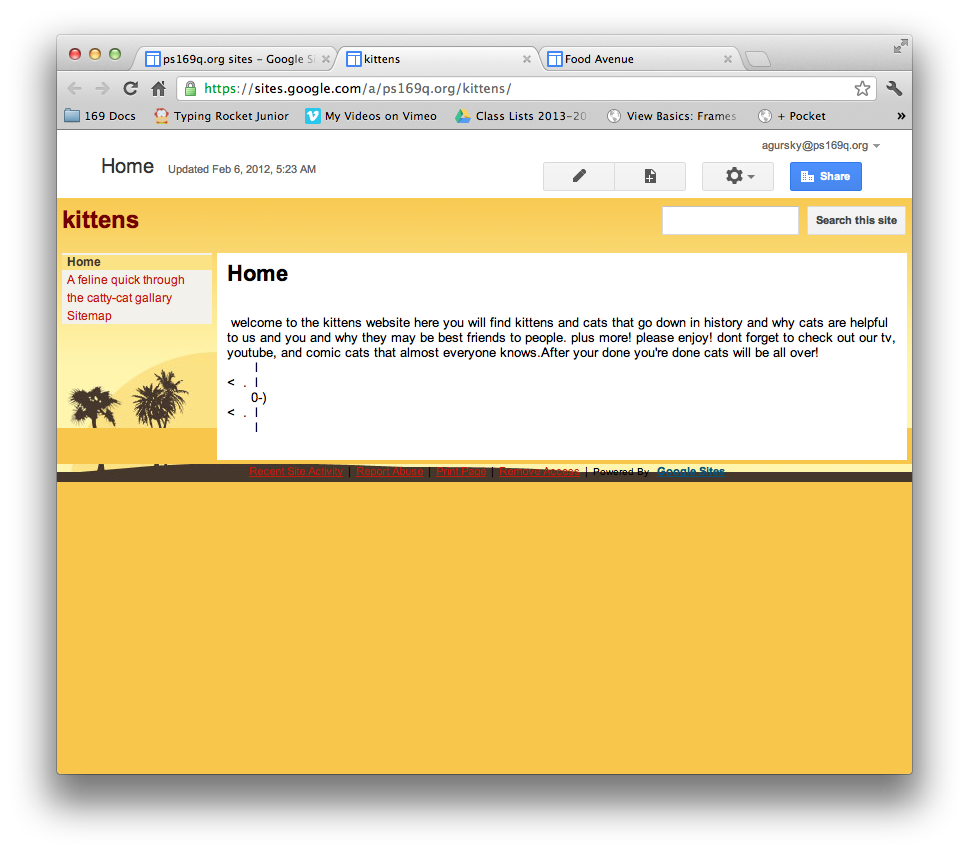
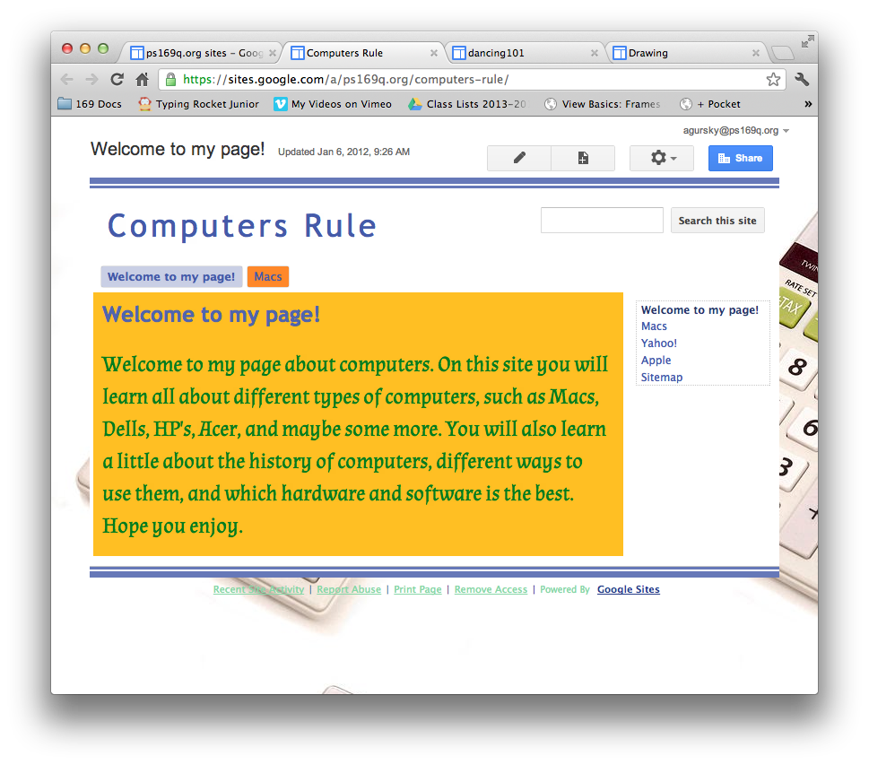

Intro to Google Sites
The last Google Tool that we will be learning about this year is Google Sites. Google Sites is not part of Google Docs. It is a seperate tool. Google Sites allows you to make simple websites using your Google Account. Like Google Docs, it can be accessed from any computer, as long as you sign in. Unlike Google Docs, when you make a change, you need to press a button to save it.
 Using Google Sites is very simple. You can change the way it looks with it's theme, you can put text, pictures, and videos into it, and you can create links to other websites, or to other pages on your own Google Site.
 Back to School Portal